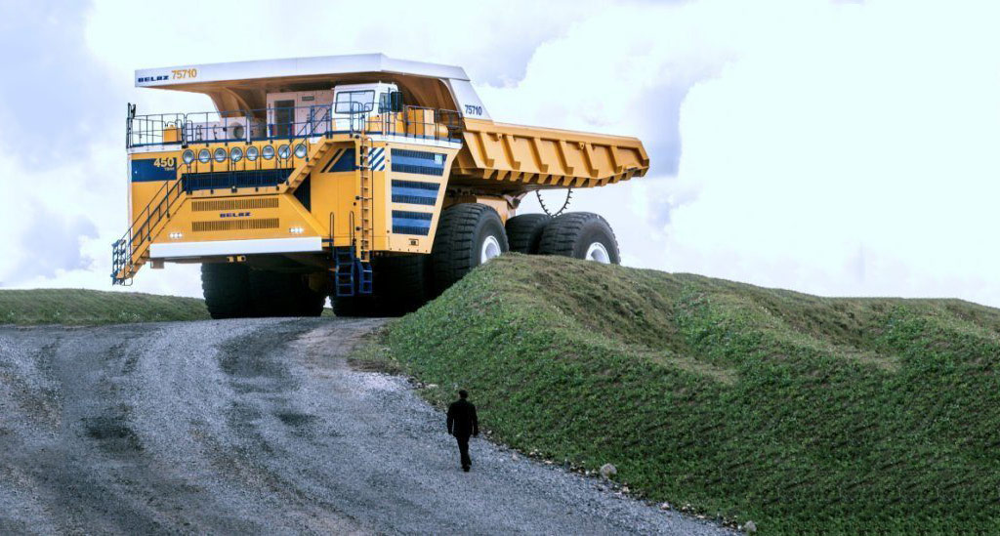

<div class="container">
    <div class="vehicle-wrap">
        <h1>BelAZ 75710</h1>
        <p>
            Tайбільший у світі самоскид вантажопідйомністю 450 тонн.
        </p>
        <table>
            <tr>
                <td>Довжина х Ширина х Висота, мм</td>
                <td>20 600 х 9870 х 8260</td>
            </tr>
            <tr>
                <td>Повна маса, т</td>
                <td>840,5</td>
            </tr>
            <tr>
                <td>Максимальна швидкість, км/год</td>
                <td>64</td>
            </tr>
        </table>
    </div>
    
</div>